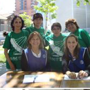

NOTICIAS
Voluntariado


Voluntariado hospitalario en Santiago: Este voluntariado trabaja en el Hospital Luis Calvo Mackenna. Su objetivo es acoger a los padres e hijos, brindándoles apoyo y acompañamiento. Las voluntarias informan a los padres cual es la misión que cumplen con los niños del hospital además de difundir los beneficios entregados a todos los niños por la Fundación Niño y Cáncer, tales como: Cena de navidad, Taller de Ski para niños amputados, Encuentro con la Montaña para niños en seguimiento, Campeonato de Futbolito y Porristas.
Voluntariado hospitalario en Concepción: Desarrollan labores en el Policlínico de Oncología del Hospital Regional de Concepción. Tiene a cargo la administración de los tres Departamentos de Acogida de la Fundación. Mantienen los departamentos con su mobiliario completo y en buenas condiciones. Además orientan a la familia beneficiadas del uso de estos.
Voluntariado administrativo: Desarrolla tareas como: acompañar a reuniones a empresas a la Asistente Ejecutiva del Directorio (cuando lo requiere), organización de eventos para recaudar fondos, captación de socios, apoyo en programas recreativos, recuento semanal de recaudación de alcancías, control telefónico semanal a nivel nacional de Pronto Copec en relación a las alcancías.
Actividades anteriores
Actividades

- Montaña de la Alegría
- Cenas de Navidad
- Campamento por la vida
- Coronas de caridad
- Torneo de futbolito y porristas
Becas de estudio

El objetivo de este proyecto es beneficiar a jóvenes recuperados de cáncer con becas académicas, para lograr la continuidad de estudios pendientes y obtener una profesión futura y reinserción en la sociedad.
Las becas podrán atender a los jóvenes con estudios universitarios, técnicos profesionales o de centros de formación técnica. Así también podrán tener alcances parciales y en ocasiones especiales, totales.
El año 2018 se otorgaron un total de 28 becas de las cuales 15 corresponden alumnos antiguos y 13 son para alumnos que inician sus estudios superiores este año 2018.
Para que estas becas sean bien utilizadas, sean objetivas y sean supervisadas, elaboramos requisitos básicos y similares a los utilizados en el resto de las instituciones que entregan estos beneficios.
Para mayor información o en caso de cualquier duda, consultar a:
Carolina Escudero P.
Asistente del Directorio
Fundación Niño y Cáncer
fundacion@ninoycancer.cl
Fono: 22170821- 22170820